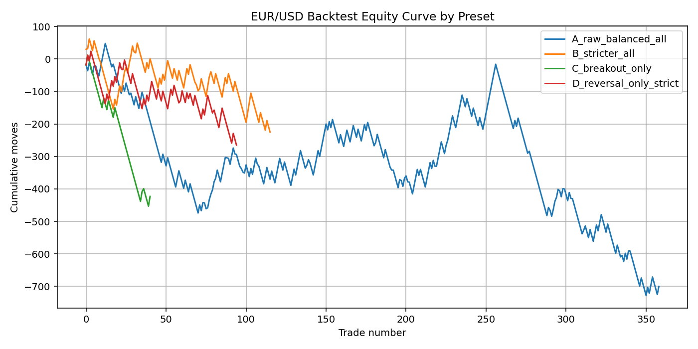
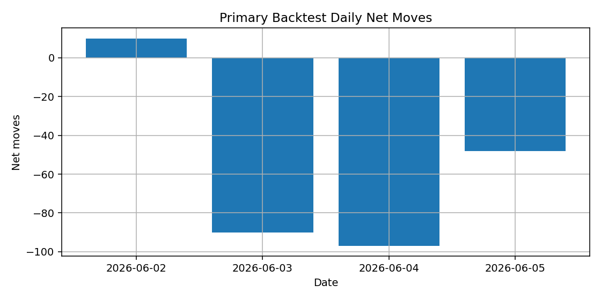

Data range: 2026-06-02 03:00:00+03:00 to 2026-06-05 16:37:00+03:00
Rows: 4593 merged BID/ASK candles
Average spread: 3.03 moves, Max spread: 21.0 moves
| trades | wins | losses | win_rate_% | net_moves | avg_moves | profit_factor | avg_hold_min | max_loss_streak | ambiguous | preset |
|---|---|---|---|---|---|---|---|---|---|---|
| 116.0 | 40.0 | 76.0 | 34.5 | -225.0 | -1.94 | 0.83 | 6.3 | 12.0 | 1.0 | B_stricter_all |
| 359.0 | 134.0 | 222.0 | 37.3 | -700.0 | -1.95 | 0.81 | 7.3 | 12.0 | 1.0 | A_raw_balanced_all |
| 95.0 | 31.0 | 64.0 | 32.6 | -265.0 | -2.79 | 0.77 | 5.8 | 9.0 | 1.0 | D_reversal_only_strict |
| 41.0 | 7.0 | 34.0 | 17.1 | -423.0 | -10.32 | 0.31 | 4.2 | 16.0 | 0.0 | C_breakout_only |
This preset used stricter filtering than the raw version:
Stop: 18 moves Target: 30 moves Max spread: 6 moves Cooldown: 10 bars
| strategy | trades | wins | losses | win_rate_% | net_moves | avg_moves | profit_factor | avg_hold_min | max_loss_streak | ambiguous |
|---|---|---|---|---|---|---|---|---|---|---|
| Fast Impulse Breakout | 15.0 | 3.0 | 12.0 | 20.0 | -126.0 | -8.40 | 0.42 | 4.3 | 7.0 | 0.0 |
| Fast Reversal | 101.0 | 37.0 | 64.0 | 36.6 | -99.0 | -0.98 | 0.91 | 6.6 | 11.0 | 1.0 |
| date | trades | wins | losses | win_rate_% | net_moves | avg_moves | profit_factor | avg_hold_min | max_loss_streak | ambiguous |
|---|---|---|---|---|---|---|---|---|---|---|
| 2026-06-02 | 29.0 | 12.0 | 17.0 | 41.4 | 10.0 | 0.34 | 1.03 | 9.4 | 12.0 | 0.0 |
| 2026-06-03 | 41.0 | 13.0 | 28.0 | 31.7 | -90.0 | -2.20 | 0.81 | 5.5 | 5.0 | 0.0 |
| 2026-06-04 | 30.0 | 10.0 | 20.0 | 33.3 | -97.0 | -3.23 | 0.73 | 5.5 | 6.0 | 0.0 |
| 2026-06-05 | 16.0 | 5.0 | 11.0 | 31.2 | -48.0 | -3.00 | 0.76 | 4.1 | 5.0 | 1.0 |


| entry_time | strategy | direction | entry | stop | target | exit_time | exit_price | outcome | pnl_moves | hold_minutes | reason |
|---|---|---|---|---|---|---|---|---|---|---|---|
| 2026-06-02 04:02:00+03:00 | Fast Reversal | BUY | 1.16331 | 1.16313 | 1.16361 | 2026-06-02 04:13:00+03:00 | 1.16361 | WIN | 30.0 | 11 | Rise 36.0 moves from recent low + green candle |
| 2026-06-02 04:45:00+03:00 | Fast Reversal | SELL | 1.16313 | 1.16331 | 1.16283 | 2026-06-02 05:05:00+03:00 | 1.16311 | WIN | 2.0 | 20 | Drop 38.5 moves from recent high + red candle |
| 2026-06-02 09:06:00+03:00 | Fast Reversal | BUY | 1.16412 | 1.16394 | 1.16442 | 2026-06-02 09:11:00+03:00 | 1.16442 | WIN | 30.0 | 5 | Rise 39.0 moves from recent low + green candle |
| 2026-06-02 09:25:00+03:00 | Fast Impulse Breakout | BUY | 1.16498 | 1.16480 | 1.16528 | 2026-06-02 09:44:00+03:00 | 1.16480 | LOSS | -18.0 | 19 | Break above 20m high + 36.5 moves impulse |
| 2026-06-02 09:44:00+03:00 | Fast Reversal | SELL | 1.16480 | 1.16498 | 1.16450 | 2026-06-02 09:47:00+03:00 | 1.16498 | LOSS | -18.0 | 3 | Drop 36.5 moves from recent high + red candle |
| 2026-06-02 11:10:00+03:00 | Fast Reversal | SELL | 1.16482 | 1.16500 | 1.16452 | 2026-06-02 11:23:00+03:00 | 1.16452 | WIN | 30.0 | 13 | Drop 43.0 moves from recent high + red candle |
| 2026-06-02 12:03:00+03:00 | Fast Reversal | SELL | 1.16406 | 1.16424 | 1.16376 | 2026-06-02 12:20:00+03:00 | 1.16424 | LOSS | -18.0 | 17 | Drop 37.0 moves from recent high + red candle |
| 2026-06-02 13:05:00+03:00 | Fast Reversal | BUY | 1.16456 | 1.16438 | 1.16486 | 2026-06-02 13:06:00+03:00 | 1.16438 | LOSS | -18.0 | 1 | Rise 43.5 moves from recent low + green candle |
| 2026-06-02 13:16:00+03:00 | Fast Reversal | SELL | 1.16412 | 1.16430 | 1.16382 | 2026-06-02 13:34:00+03:00 | 1.16430 | LOSS | -18.0 | 18 | Drop 37.0 moves from recent high + red candle |
| 2026-06-02 14:39:00+03:00 | Fast Reversal | BUY | 1.16504 | 1.16486 | 1.16534 | 2026-06-02 14:59:00+03:00 | 1.16492 | LOSS | -12.0 | 20 | Rise 38.0 moves from recent low + green candle |
| 2026-06-02 15:16:00+03:00 | Fast Reversal | BUY | 1.16525 | 1.16507 | 1.16555 | 2026-06-02 15:18:00+03:00 | 1.16507 | LOSS | -18.0 | 2 | Rise 47.5 moves from recent low + green candle |
| 2026-06-02 15:30:00+03:00 | Fast Reversal | SELL | 1.16503 | 1.16521 | 1.16473 | 2026-06-02 15:33:00+03:00 | 1.16521 | LOSS | -18.0 | 3 | Drop 35.0 moves from recent high + red candle |
| 2026-06-02 15:43:00+03:00 | Fast Reversal | SELL | 1.16508 | 1.16526 | 1.16478 | 2026-06-02 16:02:00+03:00 | 1.16526 | LOSS | -18.0 | 19 | Drop 48.0 moves from recent high + red candle |
| 2026-06-02 16:08:00+03:00 | Fast Impulse Breakout | SELL | 1.16476 | 1.16494 | 1.16446 | 2026-06-02 16:09:00+03:00 | 1.16494 | LOSS | -18.0 | 1 | Break below 20m low + 37.0 moves impulse |
| 2026-06-02 16:32:00+03:00 | Fast Reversal | SELL | 1.16446 | 1.16464 | 1.16416 | 2026-06-02 16:35:00+03:00 | 1.16464 | LOSS | -18.0 | 3 | Drop 53.0 moves from recent high + red candle |
| 2026-06-02 16:47:00+03:00 | Fast Reversal | SELL | 1.16426 | 1.16444 | 1.16396 | 2026-06-02 16:58:00+03:00 | 1.16444 | LOSS | -18.0 | 11 | Drop 54.5 moves from recent high + red candle |
| 2026-06-02 17:00:00+03:00 | Fast Reversal | SELL | 1.16389 | 1.16407 | 1.16359 | 2026-06-02 17:02:00+03:00 | 1.16407 | LOSS | -18.0 | 2 | Drop 55.0 moves from recent high + red candle |
| 2026-06-02 17:20:00+03:00 | Fast Reversal | SELL | 1.16387 | 1.16405 | 1.16357 | 2026-06-02 17:29:00+03:00 | 1.16405 | LOSS | -18.0 | 9 | Drop 49.5 moves from recent high + red candle |
| 2026-06-02 17:35:00+03:00 | Fast Reversal | BUY | 1.16446 | 1.16428 | 1.16476 | 2026-06-02 17:41:00+03:00 | 1.16476 | WIN | 30.0 | 6 | Rise 62.5 moves from recent low + green candle |
| 2026-06-02 17:50:00+03:00 | Fast Reversal | SELL | 1.16440 | 1.16458 | 1.16410 | 2026-06-02 17:52:00+03:00 | 1.16458 | LOSS | -18.0 | 2 | Drop 58.5 moves from recent high + red candle |
| 2026-06-02 18:02:00+03:00 | Fast Reversal | SELL | 1.16419 | 1.16437 | 1.16389 | 2026-06-02 18:05:00+03:00 | 1.16389 | WIN | 30.0 | 3 | Drop 44.5 moves from recent high + red candle |
| 2026-06-02 18:25:00+03:00 | Fast Reversal | SELL | 1.16415 | 1.16433 | 1.16385 | 2026-06-02 18:27:00+03:00 | 1.16385 | WIN | 30.0 | 2 | Drop 36.0 moves from recent high + red candle |
| 2026-06-02 19:00:00+03:00 | Fast Reversal | SELL | 1.16373 | 1.16391 | 1.16343 | 2026-06-02 19:07:00+03:00 | 1.16391 | LOSS | -18.0 | 7 | Drop 41.0 moves from recent high + red candle |
| 2026-06-02 19:19:00+03:00 | Fast Reversal | SELL | 1.16343 | 1.16361 | 1.16313 | 2026-06-02 19:29:00+03:00 | 1.16313 | WIN | 30.0 | 10 | Drop 37.0 moves from recent high + red candle |
| 2026-06-02 19:29:00+03:00 | Fast Reversal | SELL | 1.16306 | 1.16324 | 1.16276 | 2026-06-02 19:41:00+03:00 | 1.16276 | WIN | 30.0 | 12 | Drop 42.5 moves from recent high + red candle |
| 2026-06-02 20:09:00+03:00 | Fast Reversal | SELL | 1.16260 | 1.16278 | 1.16230 | 2026-06-02 20:29:00+03:00 | 1.16245 | WIN | 15.0 | 20 | Drop 36.5 moves from recent high + red candle |
| 2026-06-02 21:18:00+03:00 | Fast Reversal | SELL | 1.16156 | 1.16174 | 1.16126 | 2026-06-02 21:22:00+03:00 | 1.16174 | LOSS | -18.0 | 4 | Drop 36.5 moves from recent high + red candle |
| 2026-06-02 21:30:00+03:00 | Fast Reversal | BUY | 1.16227 | 1.16209 | 1.16257 | 2026-06-02 21:39:00+03:00 | 1.16257 | WIN | 30.0 | 9 | Rise 91.0 moves from recent low + green candle |
| 2026-06-02 21:46:00+03:00 | Fast Reversal | BUY | 1.16275 | 1.16257 | 1.16305 | 2026-06-02 22:06:00+03:00 | 1.16298 | WIN | 23.0 | 20 | Rise 37.0 moves from recent low + green candle |
| 2026-06-03 03:21:00+03:00 | Fast Reversal | BUY | 1.16265 | 1.16247 | 1.16295 | 2026-06-03 03:40:00+03:00 | 1.16295 | WIN | 30.0 | 19 | Rise 40.5 moves from recent low + green candle |
| 2026-06-03 04:57:00+03:00 | Fast Impulse Breakout | SELL | 1.16275 | 1.16293 | 1.16245 | 2026-06-03 04:59:00+03:00 | 1.16293 | LOSS | -18.0 | 2 | Break below 20m low + 35.0 moves impulse |
| 2026-06-03 08:27:00+03:00 | Fast Reversal | SELL | 1.16226 | 1.16244 | 1.16196 | 2026-06-03 08:47:00+03:00 | 1.16229 | LOSS | -3.0 | 20 | Drop 42.0 moves from recent high + red candle |
| 2026-06-03 09:09:00+03:00 | Fast Impulse Breakout | SELL | 1.16178 | 1.16196 | 1.16148 | 2026-06-03 09:11:00+03:00 | 1.16148 | WIN | 30.0 | 2 | Break below 20m low + 39.0 moves impulse |
| 2026-06-03 09:23:00+03:00 | Fast Impulse Breakout | SELL | 1.16130 | 1.16148 | 1.16100 | 2026-06-03 09:26:00+03:00 | 1.16148 | LOSS | -18.0 | 3 | Break below 20m low + 42.5 moves impulse |
| 2026-06-03 09:57:00+03:00 | Fast Reversal | BUY | 1.16170 | 1.16152 | 1.16200 | 2026-06-03 10:00:00+03:00 | 1.16152 | LOSS | -18.0 | 3 | Rise 35.5 moves from recent low + green candle |
| 2026-06-03 10:10:00+03:00 | Fast Impulse Breakout | BUY | 1.16188 | 1.16170 | 1.16218 | 2026-06-03 10:23:00+03:00 | 1.16170 | LOSS | -18.0 | 13 | Break above 20m high + 41.0 moves impulse |
| 2026-06-03 10:29:00+03:00 | Fast Reversal | SELL | 1.16138 | 1.16156 | 1.16108 | 2026-06-03 10:32:00+03:00 | 1.16156 | LOSS | -18.0 | 3 | Drop 50.5 moves from recent high + red candle |
| 2026-06-03 10:40:00+03:00 | Fast Reversal | SELL | 1.16168 | 1.16186 | 1.16138 | 2026-06-03 10:42:00+03:00 | 1.16186 | LOSS | -18.0 | 2 | Drop 77.0 moves from recent high + red candle |
| 2026-06-03 10:58:00+03:00 | Fast Reversal | SELL | 1.16160 | 1.16178 | 1.16130 | 2026-06-03 11:11:00+03:00 | 1.16130 | WIN | 30.0 | 13 | Drop 61.5 moves from recent high + red candle |
| 2026-06-03 11:15:00+03:00 | Fast Reversal | SELL | 1.16103 | 1.16121 | 1.16073 | 2026-06-03 11:18:00+03:00 | 1.16121 | LOSS | -18.0 | 3 | Drop 47.5 moves from recent high + red candle |
| 2026-06-03 11:32:00+03:00 | Fast Reversal | SELL | 1.16117 | 1.16135 | 1.16087 | 2026-06-03 11:39:00+03:00 | 1.16087 | WIN | 30.0 | 7 | Drop 37.0 moves from recent high + red candle |
| 2026-06-03 11:42:00+03:00 | Fast Reversal | SELL | 1.16059 | 1.16077 | 1.16029 | 2026-06-03 11:45:00+03:00 | 1.16077 | LOSS | -18.0 | 3 | Drop 58.0 moves from recent high + red candle |
| 2026-06-03 12:01:00+03:00 | Fast Impulse Breakout | BUY | 1.16131 | 1.16113 | 1.16161 | 2026-06-03 12:02:00+03:00 | 1.16113 | LOSS | -18.0 | 1 | Break above 20m high + 38.5 moves impulse |
| 2026-06-03 12:29:00+03:00 | Fast Reversal | SELL | 1.16121 | 1.16139 | 1.16091 | 2026-06-03 12:41:00+03:00 | 1.16139 | LOSS | -18.0 | 12 | Drop 37.0 moves from recent high + red candle |
| 2026-06-03 12:40:00+03:00 | Fast Reversal | BUY | 1.16136 | 1.16118 | 1.16166 | 2026-06-03 12:54:00+03:00 | 1.16118 | LOSS | -18.0 | 14 | Rise 38.5 moves from recent low + green candle |
| 2026-06-03 12:54:00+03:00 | Fast Reversal | SELL | 1.16114 | 1.16132 | 1.16084 | 2026-06-03 12:58:00+03:00 | 1.16132 | LOSS | -18.0 | 4 | Drop 40.5 moves from recent high + red candle |
| 2026-06-03 13:04:00+03:00 | Fast Reversal | BUY | 1.16164 | 1.16146 | 1.16194 | 2026-06-03 13:05:00+03:00 | 1.16194 | WIN | 30.0 | 1 | Rise 54.0 moves from recent low + green candle |
| 2026-06-03 14:46:00+03:00 | Fast Reversal | BUY | 1.16221 | 1.16203 | 1.16251 | 2026-06-03 14:48:00+03:00 | 1.16203 | LOSS | -18.0 | 2 | Rise 41.0 moves from recent low + green candle |
| 2026-06-03 14:56:00+03:00 | Fast Reversal | SELL | 1.16181 | 1.16199 | 1.16151 | 2026-06-03 15:01:00+03:00 | 1.16151 | WIN | 30.0 | 5 | Drop 44.5 moves from recent high + red candle |
| 2026-06-03 15:13:00+03:00 | Fast Reversal | SELL | 1.16125 | 1.16143 | 1.16095 | 2026-06-03 15:14:00+03:00 | 1.16143 | LOSS | -18.0 | 1 | Drop 44.0 moves from recent high + red candle |
The current idea of fast breakout/reversal detection needs more work. The data shows many whipsaws and late entries. The next system should not be deployed as a live signal engine yet. We need: